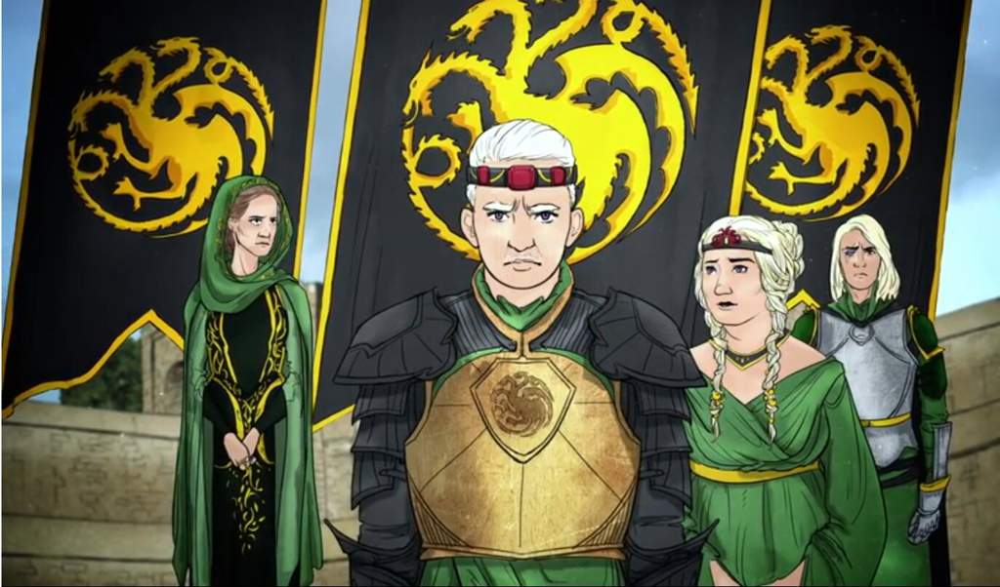

Conteúdo
Aegon II Targaryen é um personagem importante em "Fogo e Sangue", de George R. R. Martin, e algumas de suas melhores falas incluem:
O fogo e o sangue correm nas veias da minha família, e eu não permitirei que ninguém os apague.
Eu lutarei até meu último suspiro para proteger meu reino e meu povo.
"Um rei deve ser temido tanto quanto amado, e eu serei ambos.
Não há vitória sem sacrifício.
Eu não sou um homem que abandona seus amigos e aliados. Eu sou leal até o fim.
Aparência
Em "Fogo e Sangue", Aegon II Targaryen é descrito como um homem de aparência nobre e majestosa, típica dos Targaryen. Ele tem cabelos prateados, olhos violeta e um rosto anguloso com traços fortes.
Ao longo da história, sua aparência muda devido às feridas que sofre em batalhas e conflitos, incluindo uma cicatriz no rosto que o deixa desfigurado. Ele também é descrito como tendo uma postura altiva e dominante, que reforça sua personalidade forte e determinada.
Apesar de suas cicatrizes, Aegon II mantém sua aparência regal e nobre, com roupas e armaduras requintadas que demonstram seu status real. Sua aparência física é um reflexo de sua linhagem nobre e poderosa, e ajuda a fortalecer sua posição como um líder entre seus seguidores e inimigos.
Personalidade
Aegon II Targaryen, personagem do livro "Fogo e Sangue" de George R. R. Martin, é retratado como um homem ambicioso e determinado, que acredita ter o direito de reivindicar o Trono de Ferro e governar os Sete Reinos. Ele é o segundo filho do rei Viserys I Targaryen e é descrito como sendo obstinado e teimoso.

Aegon II é altamente competitivo e está disposto a lutar para manter seu poder. Ele é descrito como sendo corajoso e destemido, e é capaz de tomar decisões difíceis em momentos de crise. No entanto, sua sede de poder e sua relutância em abrir mão da coroa o tornam impopular entre seus súditos.
Alguns personagens veem Aegon II como um usurpador, enquanto outros o reconhecem como o herdeiro legítimo do Trono de Ferro. Em sua busca pelo poder, ele faz aliados e inimigos, e sua personalidade forte e decisiva afeta significativamente os eventos que se desenrolam na história.
Em resumo, Aegon II Targaryen é um personagem complexo, que combina ambição, coragem e obstinação, mas também é impopular e controverso em sua busca pelo poder.